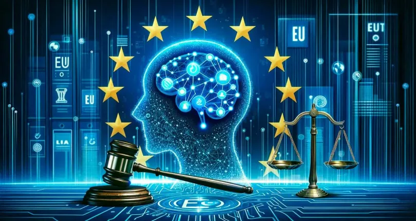

Inteligencia Artificial de Imagenes

¿Que son estas IA?
La Inteligencia Artificial de Imágenes es una rama de la IA que combina visión por computadora, aprendizaje profundo y procesamiento de datos visuales para crear, modificar o mejorar imágenes digitales.
Lo que hace pocos años parecía ciencia ficción ,describir una escena con palabras y obtener una imagen realista en segundos, hoy es una herramienta accesible para profesionales, empresas y usuarios comunes.
Estas tecnologías no solo generan imágenes nuevas desde cero, sino que también pueden restaurar fotos antiguas, eliminar elementos no deseados, mejorar resolución, cambiar estilos artísticos o incluso crear retratos hiperrealistas de personas que no existen.
Su impacto es tan grande que está transformando industrias enteras como el arte, el cine, la publicidad, el diseño gráfico, la moda y la educación.
Estas herramientas son capaces de:
- Generar imágenes nuevas a partir de descripciones escritas. Por ejemplo, con un simple texto como “un bosque nevado con castillos de cristal” la IA puede producir una ilustración realista o artística.
- Modificar fotografías existentes, cambiando fondos, ajustando iluminación, aplicando estilos artísticos (óleo, acuarela, estilo cómic) o alterando la composición.
- Aumentar la calidad de imágenes antiguas o de baja resolución, restaurando colores, eliminando ruido y mejorando nitidez.
- Combinar varias imágenes para crear composiciones inéditas, prototipos de productos o escenarios imaginarios.
¿Como funciona esta IA?
Para alcanzar estos resultados, las herramientas de inteligencia artificial de imágenes utilizan modelos de aprendizaje profundo (Deep Learning), una rama de la IA que se inspira en la forma en que funciona el cerebro humano. Estos modelos están entrenados con millones de imágenes de todo tipo ,fotografías, ilustraciones, arte digital, objetos, paisajes, junto con descripciones en texto que indican qué aparece en cada imagen. Durante el entrenamiento, la IA analiza patrones como formas, colores, texturas, sombras, proporciones y relaciones espaciales, aprendiendo a reconocer cómo se combinan estos elementos para formar una imagen coherente.
Entre las tecnologías más destacadas se encuentran:
Ventajas que ofrece las IA de imagenes:
Las IA de imágenes ofrecen beneficios que explican su rápida adopción en todo el mundo:
- Creatividad sin límites: permiten imaginar y materializar escenarios imposibles, mundos futuristas, criaturas fantásticas o estilos artísticos únicos que antes requerían meses de trabajo.
- Rapidez de producción: en cuestión de segundos se pueden generar prototipos para publicidad, videojuegos, ilustraciones, presentaciones o arte digital, acelerando procesos que antes tomaban días o semanas.
- Accesibilidad: no es necesario saber dibujar, pintar ni dominar software de edición complejo para obtener resultados profesionales.
- Versatilidad de aplicación: son útiles en marketing, diseño gráfico, arquitectura, cine, educación, entretenimiento, videojuegos y hasta en investigación científica.
- Prototipado de ideas: ideal para mostrar conceptos en etapas tempranas de un proyecto (diseño de productos, bocetos de personajes, maquetas de espacios).
Desventajas que ofrece las IA de imagenes:
- Calidad variable: las imágenes generadas pueden tener errores visuales (artefactos), detalles incoherentes, manos deformadas o texto mal escrito dentro de la imagen.
- Derechos de autor y ética: muchos modelos se entrenan con imágenes de internet que podrían tener copyright. Esto genera debates sobre la propiedad intelectual y el uso de estilos de artistas reales sin su consentimiento
- Sesgos en los datos: si el modelo fue entrenado con imágenes que reflejan estereotipos culturales, puede reproducirlos en los resultados, por ejemplo en representaciones de género, etnias o roles sociales.
- Control creativo limitado: aunque los prompts sean detallados, a veces es difícil obtener exactamente la composición, los colores o el estilo deseado.
- Costos de computación: las versiones más avanzadas o las imágenes en alta resolución requieren servidores potentes o suscripciones de pago.
Ejemplos de IA De Imagenes
| Herramienta | Características principales |
|---|---|
| DALL-E (OpenAI) | Genera imágenes artísticas o realistas a partir de texto. Ideal para ilustraciones creativas, publicidad o prototipos de productos. |
| Midjourney | Reconocido por su estilo artístico muy detallado, con colores intensos y composiciones de alta calidad. Perfecto para arte conceptual, portadas y diseño gráfico. |
| Stable Diffusion (DreamStudio) | Plataforma de código abierto que permite mayor personalización. Se puede instalar localmente para tener control sobre parámetros como estilo, resolución y nivel de detalle. |
| Adobe Firefly | Integrado en el ecosistema de Adobe. Permite generar imágenes, editar fotos, eliminar fondos, cambiar estilos y trabajar en conjunto con Photoshop e Illustrator para un flujo profesional. |
Conclusion:
Las IA de imágenes son sistemas capaces de crear, modificar y mejorar imágenes de forma automática, ya sea a partir de datos existentes o de indicaciones en texto. Estas herramientas han transformado la forma en que se produce contenido visual, permitiendo generar obras artísticas, diseños publicitarios, fotografías mejoradas y simulaciones que antes requerían mucho tiempo y esfuerzo.
Sin embargo, aunque estas IA son muy poderosas, no están exentas de limitaciones y riesgos. Pueden generar imágenes con errores o detalles poco realistas, reflejar prejuicios o estereotipos presentes en los datos de entrenamiento, y en algunos casos, ser utilizadas para crear contenido engañoso o manipulado. Además, su creatividad depende siempre de patrones previamente aprendidos, por lo que no poseen intuición ni juicio propio.
En conclusión, las IA de imágenes representan una herramienta innovadora y extremadamente útil para la creación y el análisis visual, que potencia la creatividad humana y agiliza procesos complejos. No obstante, es fundamental utilizarlas con responsabilidad y supervisión, combinando siempre la capacidad técnica de la máquina con la ética, el criterio y la creatividad de las personas.
Si usted quiere usar estas IA, vaya aca:
DALL-EMidjourney
Stabble Diffusion
Adobe Firefly